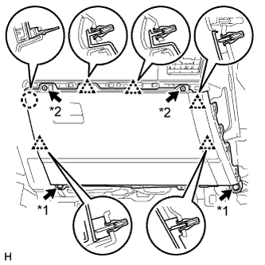

ЭБУ МУЛЬТИМЕДИЙНОГО ИНТЕРФЕЙСА > УСТАНОВКА |
| 1. УСТАНОВИТЕ КРОНШТЕЙН МОДУЛЯ МУЛЬТИМЕДИЙНОГО ИНТЕРФЕЙСА № 1 |
Закрепите кронштейн модуля мультимедийного интерфейса № 1 болтом.
| 2. УСТАНОВИТЕ КРОНШТЕЙН МОДУЛЯ МУЛЬТИМЕДИЙНОГО ИНТЕРФЕЙСА № 2 |
Закрепите кронштейн модуля мультимедийного интерфейса № 2 болтом.
| 3. УСТАНОВИТЕ ЭБУ МУЛЬТИМЕДИЙНОГО ИНТЕРФЕЙСА |
Установите ЭБУ мультимедийного интерфейса и закрепите его 2 гайками.
Подсоедините 3 разъема.
| 4. УСТАНОВИТЕ ДВЕРЦУ ПЕРЧАТОЧНОГО ЯЩИКА В СБОРЕ |
|  |
Подсоедините все разъемы.
Установите дверцу перчаточного ящика и введите в зацепление 5 зажима и захват.
Вверните 2 болта <C> и 2 винта <A> или <B>.
| *1 | Болт |
| *2 | Винт |
| 5. УСТАНОВИТЕ НИЖНЮЮ КРЫШКУ ПАНЕЛИ ПРИБОРОВ № 2 В СБОРЕ |
Введите в зацепление 3 фиксатора и 2 направляющих, чтобы установить нижнюю крышку панели приборов № 2.
Вверните винт.
| *A | Для моделей с левосторонним рулевым управлением | *B | Для моделей с правосторонним рулевым управлением |
| 6. УСТАНОВИТЕ ДЕКОРАТИВНЫЙ ЭЛЕМЕНТ ПАНЕЛИ ПРИБОРОВ |
Установите 5 фиксаторов для установки декоративного элемента панели приборов.
| 7. УСТАНОВИТЕ ПРАВУЮ БОКОВУЮ ПАНЕЛЬ ПРИБОРОВ |
Подсоедините разъем.
Введите в зацепление 5 фиксаторов, захват и 3 направляющие, чтобы установить боковую панель приборов.
| 8. ПОДСОЕДИНИТЕ ПРОВОД К ОТРИЦАТЕЛЬНОМУ (-) ВЫВОДУ АККУМУЛЯТОРНОЙ БАТАРЕИ |